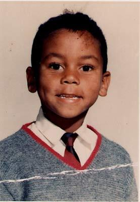
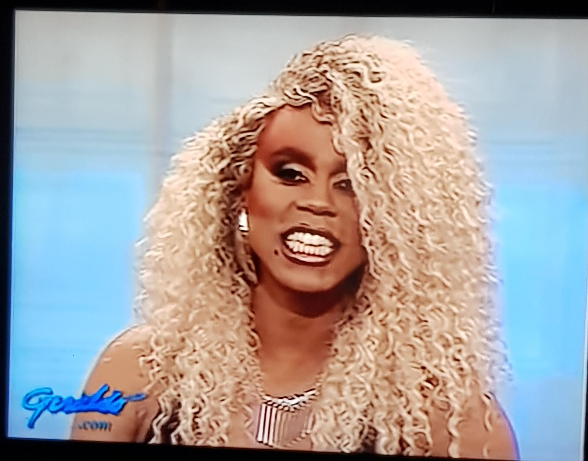

I had never danced Folklorico before, but my college friend encouraged me to give it a try. I had a great time and participated for a year in college. Even now, I can still recall some of the dance steps. I draw inspiration from the vibrant colors of the costumes, and my culture significantly influences my creativity.


Click on the image
I took a silk screening class while in college in the Chicano/Latino Studies program, and my classmates and I used the skills we learned to create posters for a protest against tuition hikes. I'm holding one of my classmates' designs. Working with this medium as a creative outlet was amazing, and I had a great time making silk screen posters.